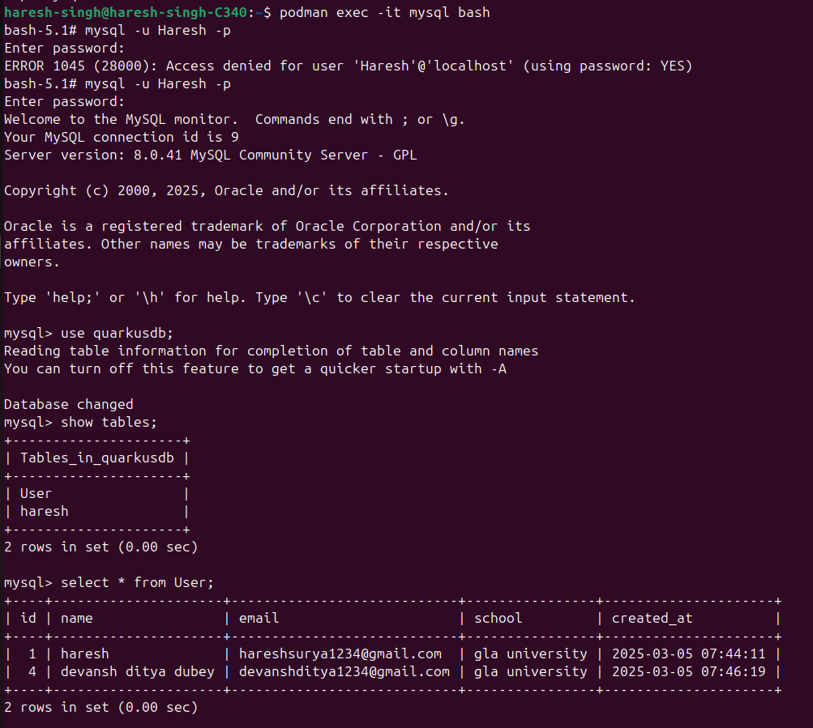
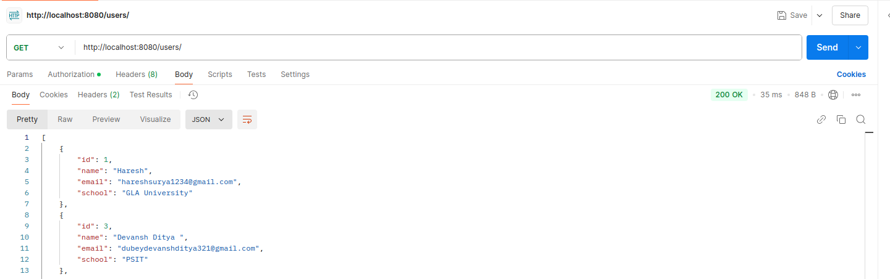
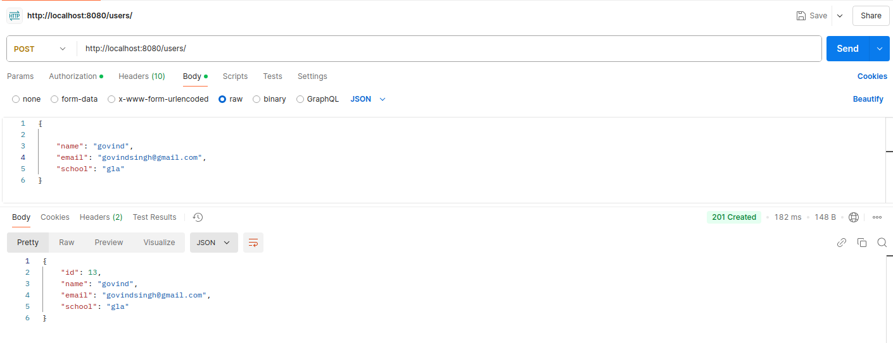
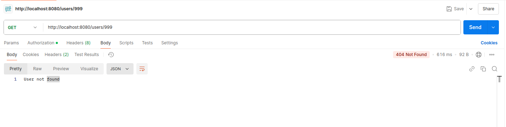
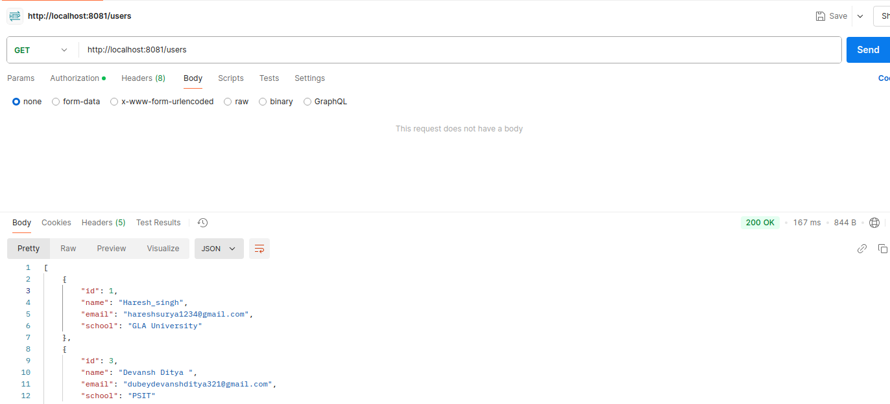
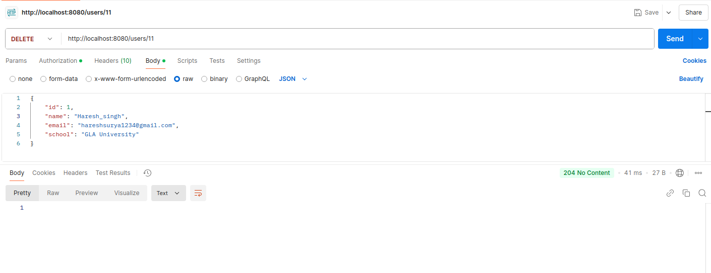

TEST CASES: CRUD API Using Quarkus
Submitted By | Haresh Singh |
Submitted To | Mr.Vipin Tripathi |
Test Case Version | 1 |
Reviewer Name | Ms. Moumita Roy |
Goal
The goal of this project is to set up a Quarkus-based CRUD API integrated with MySQL, with multiple API instances running and NGINX acting as a load balancer. The API instances will interact with the MySQL database to handle CRUD operations efficiently, while NGINX distributes the incoming requests among the instances for better performance and reliability.
Table of Content:
Test Case 1 Valid Request GET to Fetch All Records 3
Test Case 2 Valid Request POST to Add a New Record 4
Test Case 3 Valid Request PUT to Update a Record 5
Test Case 4 Valid Request DELETE to Remove a Record 6
Test Case 5 Invalid Request GET for a Non-Existing Record 7
Test Case 6 Valid MySQL Container Connectivity 8
Test Case 7 MySQL Container Failure Handling 9
Test Case 8 Load Balancer NGINX Distributes Traffic 10
Test Case 9 Load Balancer Handles Instance Failure 11
Test Case 1: Valid Request GET to Fetch All Records
Scenario | Scenario: Fetch all data from the mysql database without specifying any query parameters. |
Remarks | Verify that all records are returned for a GET request to fetch all items. |
Given | The Quarkus server is running on port 8080.
And The Mysql database is accessible.
And
The table User in the quarkusdb database exists and contains data.
And
Already install postman
|
When | The user makes a GET request to http://localhost:8080/users/ using postman |
Then
| The response contains JSON data with details about all users And The server responds with a 200 status code. Checked |
Test Run | Date |
| Result |
|

|
Test Case 2: Valid Request POST to Add a New Record
Scenario | Add a new record to the MySQL database. |
Remarks | Verify that a new record is successfully added when a valid POST request is made. |
Given | The Quarkus server is running on port 8080.
And The mysql database is accessible.
And
Already install postman |
When | The user makes a POST request to http//localhost8080/users with a valid JSON payload using postman |
Then | A new record is created in the User table with the specified details-name,email,school.what specified details And The server responds with a 200 status code.
And The response contains the created item's details with an auto-generated id. |
Test Run | Date |
| Result |
|
 |
Test Case 3: Valid Request PUT to Update a Record
Scenario | Update an existing record in the database. |
Remarks | Verify that an existing record is successfully updated when a valid PUT request is made. |
Given | The Quarkus server is running on port 8080.
And The mysql database is accessible.
And The User table contains a record with id
And
Already install postman |
When | The user makes a PUT request to: http://localhost:8080/users/1 with a valid JSON payload: using postman |
Then | The record with id=1 is updated in the database with the new values. And The response contains the updated user's details. Checked |
Test Run | Date |
| Result |
|
|
Test Case 4: Valid Request DELETE to Remove a Record
Scenario | Delete an existing record from the database. |
Remarks | - Verify that an existing record is successfully deleted when a valid DELETE request is made.
|
Given | The Quarkus server is running on port 8080.
And The User table contains a record with id=1.
And
Already install postman |
When | The user makes a DELETE request to http://localhost:8080/users/1 Using postman |
Then | The record with id=1 is deleted from the database.
And The server responds with a 204 status code.
And
No content is returned in the response body.
checked
|
Test Run | Date |
| Result |
|
 |
Test Case 5: Invalid Request GET for a Non-Existing Record
Scenario | Fetch details of a non-existing record from the database. |
Remarks | - Verify that the correct error response is returned when a GET request is made for a non-existing record.
|
Given | The Quarkus server is running on port 8080.
And The mysql database is accessible.
And The User table does not contain a record with id=999. |
When | The user makes a GET request to http://localhost:8080/users/999
And The user clicks on the send button or enters. |
Then | The server responds with a 404 status code.
And
The response contains an error message.
“User not found” checked |
Test Run | Date |
| Result |
|

|
Test Case 6: Valid MySQL Container Connectivity
Scenario | Verify that the API can successfully connect to the MySQL container. |
Remarks | - Ensure the API can communicate with the MySQL container.
|
Given | The MySQL container is running on localhost:3306 with - Username: Haresh
- Password: Haresh@123
- Database: quarkusdb
AndThe Quarkus server is running on port 8080 with correct database credentials in application.properties. |
When | The API starts and initializes the database connection. |
Then | CRUD operations performed via the API successfully modify the quarkusdb database.
Checked |
Test Run | Date |
| Result |
|
Testing outputs (paste your output/snapshots here ) |
Test Case 7: MySQL Container Failure Handling
Scenario | Verify the behavior of the API when the MySQL container is unavailable.
|
Remarks | Verify the behavior of the API when the MySQL container is unavailable. |
Given | The Quarkus server is running on port 8080. And The MySQL container is stopped or unavailable. |
When | The user makes a GET request to: http://localhost:8080/users |
Then | The server responds with a 500 status code. AndThe response contains an error message Checked |
Test Run | Date |
| Result |
|
 |
Test Case 8: Load Balancer NGINX Distributes Traffic
Scenario | Verify that the NGINX load balancer distributes traffic across all API instances.
|
Remarks | Ensure that traffic is distributed evenly among the API containers. |
Given | NGINX container is running on port 8081. And API instance 1 is running on port 8080.
And
API instance 2 is running on port 8082. And API instance 3 is running on port 8083. |
When | The user sends multiple GET requests to http://localhost:8081/users |
Then | NGINX forwards the requests to the API instances in a round-robin manner - Request -> API instance 1 (localhost:8080)
- Request -> API instance 2 (localhost:8082)
- Request -> API instance 3 (localhost:8083).
Checked |
Test Run | Date |
| Result |
|
 |
Test Case 9: Load Balancer Handles Instance Failure
Scenario | Verify that the NGINX load balancer handles failures when one or more API instances are unavailable.
|
Remarks | Ensure NGINX continues to route traffic to available API instances.. |
Given | NGINX container is running on port 8081. And API instance 1 is running on port 8080. And API instance 2 is running on port 8082 And API instance 3 is stopped or unavailable. |
When | The user sends multiple GET requests to http://localhost:8081/users |
Then | NGINX forwards the requests only to the available API instances: - Request 1 -> API instance 1 (localhost:8080)
- Request 2 -> API instance 2 (localhost:8082)
AndEach available API instance responds with a 200 status code and valid JSON data. AndNGINX does not forward requests to the unavailable instance, and no errors are observed. Checked |
Test Run | Date |
| Result |
|
 |